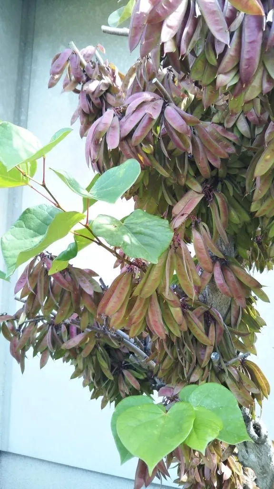

灌木与花木 · 植物界
紫荆 Cercis chinensis

中国特有的早春观花灌木，花朵紫红、密密簇生于老枝与主干上，俗称“满条红”，是庭院与公园常见花木。
- 分类
- 门被子植物门纲木兰纲目豆目科豆科属紫荆属
- 栖息环境
- 海拔 1500 米以下的山坡、林缘与庭院，喜光耐寒耐旱
- 地理分布
- 中国华北、华东、中南及西南地区，各地广泛栽培
- 保护级别
- 暂无评估；中国未列入国家重点保护野生植物名录
物种志
紫荆为落叶灌木或小乔木，高可达 5 m，树皮灰褐色、平滑；叶片心形，互生，全缘，表面光滑，叶柄细长。花期 3–4 月，先花后叶，花紫红色、蝶形，数朵至十余朵簇生于老枝和主干上，密密麻麻，故有“满条红”之称；荚果扁平、线形，长 5–15 cm，成熟时深褐色，内含 2–6 粒种子。
紫荆原产中国华北、华东、中南及西南地区，中国各地广泛栽培，喜光、耐寒、耐旱，对土壤要求不严，在庭院与公园中常见。早春紫花满枝、花后心形叶片翠绿，观赏效果极佳，是北方与江南常见的早春观花灌木；树皮与花可入药，有活血通经之效；木材可供细木工用。紫荆在香港地区是重要的文化符号，香港区旗与区徽上的花朵即为洋紫荆，但洋紫荆与北方常见的紫荆并非同种植物。
形态与习性
- 株高可达 5 m，树皮灰褐色平滑
- 花期3–4 月，先花后叶
- 果期9–10 月，荚果扁平线形
- 光照喜光，稍耐阴
- 水分耐旱，怕积水
- 土壤适应性强，各类土壤均可生长
- 主要用途庭院与公园观赏、树皮与花入药、细木工用材
趣味知识
- 紫荆的花密生于老枝与主干上，开花时满枝紫红，因此又称“满条红”。
- 紫荆先花后叶，花色紫红，是北方与江南常见的早春观花灌木。
- 香港区旗上的紫荆是洋紫荆，与北方常见的紫荆并非同种植物。
- 紫荆的叶片呈心形，花后长出的绿叶与紫花一样具有观赏价值。